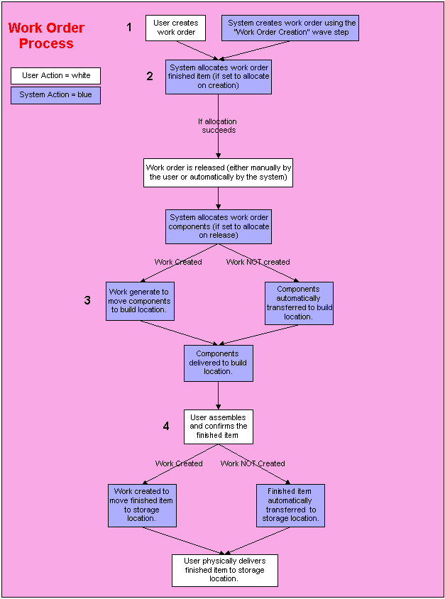

** Process Flows **
This process diagram illustrates how the system manages the movement of work orders through the system.

Work orders manage how a finished item will be assembled. They are defined on the Work Order screen. All work order related information, such as components and instructions, can be stored on a bill of material record or manually entered when the work order is created.
An employee creates the work order on the Work Order screen; or, the system creates a work order using the "Work Order Creation" wave step:
If a bill of material record exists for this finished item, the system retrieves the finished item values, component information and instructions from this record.
The system references the user's work order preference record to check the Create Work Checkbox.
If the checkbox is selected, the system will check the work order component work criteria records to see if any apply to this work order.
- If a record applies to this work order, the system generates work to move the components to the build location. The necessary inventory is allocated from the storage location(s) and set as in transit to the build location. The user may generate the Work Order Pick List to identify the appropriate components, pick locations and build location, or he/she may complete the work on an RF device.
- If a record does not apply to this work order, the system cannot create work to move the allocated components. The user will need to deallocate the build components, create a work criteria record to accommodate the work order and select to allocate the components again.
Employees use the instructions defined on the work order to assemble the finished items. The Work Order Instruction List provides both instructions and a list of the build components.
The system references the user's work order preference record to check the Create Work Checkbox.
If the checkbox is selected, the system will check the work order finished item work criteria records to see if any apply to this work order.
- If a record applies to this finished item, the system generates work to move the finished items to the storage location(s). The necessary inventory is allocated from the build location and set as in transit to the storage location. The user may generate the Work Order Finished Item Putaway List to identify the finished item and storage location(s), or he/she may complete the work on an RF device.
- If a record does not apply to this finished item, the system cannot create work to move the finished items to the appropriate storage location(s).
If the checkbox is NOT selected, the system cannot create work to move the finished item to the appropriate storage location(s). Instead, the items are removed from the build location's On Hand Quantity and transferred to the storage location(s) automatically. Usually when work is not created, the user generates the Work Order Finished Item Putaway List to identify the appropriate finished item and putaway locations.
The finished item is delivered to the build location. It can now be allocated.